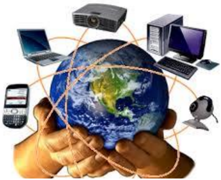

Techniques de l'information et de la communication
كلمة تكنولوجيا الإعلام والاتصال مركبة من ثلاث كلمات هي:
تكنولوجيا (Technologie) هي كلمة أصلها يوناني technología مركبة من مقطعين:
وهي تلك المجموعة المتناسقة من المعارف والممارسات في المجال التقني، وتوظيفها بشكل منطقي لتأدية وظيفة محددة وبلوغ أهداف مرجوة.
الإعلام لغة هو الإخبار وتقديم المعلومات، ويعني وجود رسالة (أخبار، معلومات، أفكار وآراء) تنتقل من مرسل إلى مستقبل.
الاتصال هو العملية التي يتم بمقتضاها تفاعل بين مرسل ومستقبل ورسالة في مضامين معينة مستعملين أدوات خاصة.
مثل: اللقاءات العلمية، المحاضرات، الندوات، المؤتمرات، الدروس في القسم، ...
تكنولوجيا الإعلام والاتصال (TIC) هي:
ويمكن اختصار المفهوم في أنه ذلك التلاقي والتزاوج بين عتاد وأجهزة الكمبيوتر بمختلف أنواعها والبرمجيات وشبكات الاتصالات.

استخدام التكنولوجيا في العملية التعليمية التعلمية يعتبر تطويرا وإثراء لها وتيسيرا لها، وذلك باستخدام الوسائل التكنولوجية من وسائل صوتية وفيديو وشرائح وغيرها، حيث أصبح الكمبيوتر الأداة الرئيسية التي تركز على نشاط المتعلم وعلى أساليب العمل داخل القسم. ومن أهم خصائصها:
تهتم تقنية المعلومات باستخدام الحواسيب ووسائل الاتصال والتطبيقات من أجل
تخزين، معالجة، حماية، إرسال واسترجاع آمن للمعلومات.
لقد مرت بمراحل عدة في تطورها عبر الزمن وبسرعة جد فائقة وصولا إلى ما نحن عليه اليوم، ويمكن تصنيف التطور إلى ثلاثة أصناف هي:
يبين الجدول الموالي تطور أجهزة الحواسيب عبر الزمن:
| الجهاز | سنة الظهور |
|---|---|
| بدأ تشغيل الكمبيوتر المعروف باسم EDVAC | 1951 |
| ظهر أول حاسوب محمول يعتمد على المعالج الدقيق. | 1981 |
| ظهر أول هاتف ذكي باسم Simon من إنتاج شركة IBM | 1994 |
| عرضت Microsoft أول نموذج لحاسوب لوحي يعمل بالقلم | 2001 |
| تطلق Sony Ericsson سلسلة الهواتف الذكية | 2009 |
| ظهر جهاز iPhone من شركة أبل Apple | 2007 |
| تكشف Samsung عن (Galaxy Tab) الذي يعمل بنظام (Android) من Google | 2010 |
لا يمكن الاستفادة من العتاد بدون برامج وهي بدورها تتطور بتطور الأجهزة ويمكن تصنيفها إلى صنفين:
التي هي كثيرة ومتنوعة وفي مختلف المجالات والميادين وكان تطورها دوما مرتبطا بالأجهزة وبأنظمة التشغيل.
توجد عدة شركات مصممة لأنظمة التشغيل، لكن نتوقف عند شركة Microsoft التي تستحوذ على أكثر من 90% من الاستعمال عبر العالم، حيث بدأت بنظام MS-DOS سنة 1981 ثم تحولت لنظام Windows ذو الواجهة البيانية، ويبين المخطط التالي تطور النظام:
| Windows 8 | Windows 7 | Windows Vista | Windows XP | Windows 95 | Windows 1.0 |
|---|---|---|---|---|---|
| أكتوبر 2012 | أكتوبر 2009 | جانفي 2007 | أكتوبر 2001 | أوت 1995 | نوفمبر 1985 |
بدأ تصميم أنظمة التشغيل الخاصة باللوحات الرقمية والهواتف الذكية سنة 1987، وعرفت هي كذلك تطورا سريعا بحيث تخصصت مختلف الشركات المختصة في البرمجة بهذا النوع، ومنها ما يبينه الجدول:
| الشركة | النظام |
|---|---|
| Android | |
| Samsung | Bada |
| Apple | iOS |
| RIM | BlackBerry OS |
| Symbian ltd | Symbian OS |
| Microsoft | Windows Phone |